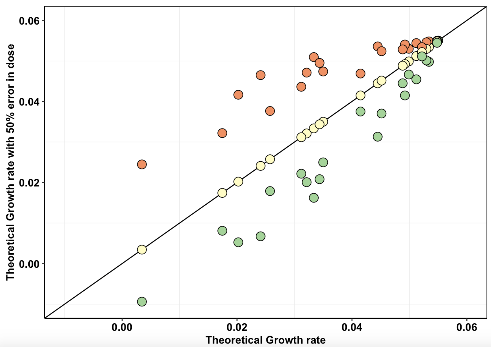
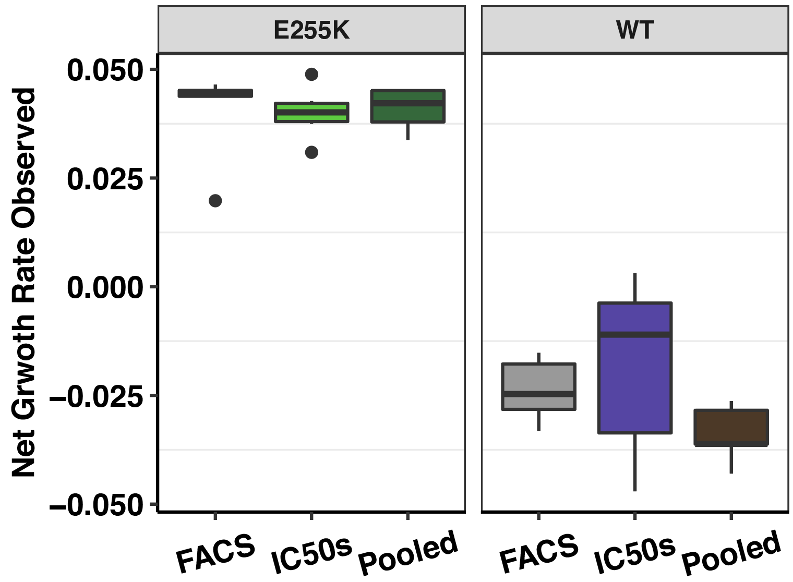

Home
Last updated: 2022-10-29
Checks: 2 0
Knit directory: duplex_sequencing_screen/
This reproducible R Markdown analysis was created with workflowr (version 1.6.2). The Checks tab describes the reproducibility checks that were applied when the results were created. The Past versions tab lists the development history.
Great! Since the R Markdown file has been committed to the Git repository, you know the exact version of the code that produced these results.
Great! You are using Git for version control. Tracking code development and connecting the code version to the results is critical for reproducibility.
The results in this page were generated with repository version ba25cb7. See the Past versions tab to see a history of the changes made to the R Markdown and HTML files.
Note that you need to be careful to ensure that all relevant files for
the analysis have been committed to Git prior to generating the results
(you can use wflow_publish or
wflow_git_commit). workflowr only checks the R Markdown
file, but you know if there are other scripts or data files that it
depends on. Below is the status of the Git repository when the results
were generated:
Ignored files:
Ignored: .Rhistory
Ignored: .Rproj.user/
Ignored: data/Consensus_Data/.Rhistory
Ignored: data/Consensus_Data/Novogene_lane13/sample7/variant_caller_outputs/
Ignored: data/Consensus_Data/Novogene_lane13/sample8/variant_caller_outputs/
Ignored: data/Consensus_Data/Novogene_lane14/sample10_combined/variant_caller_outputs/duplex/
Ignored: data/Consensus_Data/Novogene_lane14/sample13/
Ignored: data/Consensus_Data/Novogene_lane14/sample14b/
Ignored: data/Consensus_Data/Novogene_lane14/sample1_combined/
Ignored: data/Consensus_Data/Novogene_lane14/sample8/variant_caller_outputs/
Ignored: data/Consensus_Data/Novogene_lane2/abl_ref/kraken2-master/newdir/
Ignored: data/Consensus_Data/Novogene_lane4/.ipynb_checkpoints/
Ignored: data/Consensus_Data/Novogene_lane4/GalaxyData/initialanalysis/
Ignored: data/Consensus_Data/Novogene_lane4/output/
Ignored: data/Consensus_Data/Novogene_lane6/
Ignored: data/Consensus_Data/Novogene_lane7/
Ignored: data/Consensus_Data/Ranomics_Pooled/RP4/
Ignored: data/Consensus_Data/Ranomics_Pooled/RP5/
Untracked files:
Untracked: data/Consensus_Data/Novogene_lane14/sample10_combined/duplex_sorted_filtered.tsv
Untracked: data/Consensus_Data/Novogene_lane14/sample10_combined/variant_caller_outputs/.DS_Store
Unstaged changes:
Modified: .DS_Store
Modified: data/.DS_Store
Modified: data/Consensus_Data/.DS_Store
Modified: data/Consensus_Data/Novogene_lane11/.DS_Store
Modified: data/Consensus_Data/Novogene_lane12/.DS_Store
Modified: data/Consensus_Data/Novogene_lane12/sample1/.DS_Store
Modified: data/Consensus_Data/Novogene_lane12/sample3/.DS_Store
Modified: data/Consensus_Data/Novogene_lane14/.DS_Store
Modified: data/Consensus_Data/Novogene_lane14/sample10_combined/.DS_Store
Modified: data/Consensus_Data/Novogene_lane14/sample14_combined/.DS_Store
Modified: data/Consensus_Data/Novogene_lane14/sample15/.DS_Store
Modified: data/Consensus_Data/Novogene_lane14/sample16/.DS_Store
Modified: data/Consensus_Data/Novogene_lane14/sample17/.DS_Store
Modified: data/Consensus_Data/Novogene_lane14/sample18/.DS_Store
Modified: data/Refs/.DS_Store
Modified: data/Refs/EGFR/.DS_Store
Note that any generated files, e.g. HTML, png, CSS, etc., are not included in this status report because it is ok for generated content to have uncommitted changes.
These are the previous versions of the repository in which changes were
made to the R Markdown (analysis/index.Rmd) and HTML
(docs/index.html) files. If you’ve configured a remote Git
repository (see ?wflow_git_remote), click on the hyperlinks
in the table below to view the files as they were in that past version.
| File | Version | Author | Date | Message |
|---|---|---|---|---|
| Rmd | ba25cb7 | haiderinam | 2022-10-29 | wflow_publish("analysis/index.Rmd") |
| Rmd | 7ed0af8 | haiderinam | 2022-08-22 | August 2022 Updates |
| html | 86ce8ca | haiderinam | 2022-08-22 | August 2022 Update |
| html | f368371 | haiderinam | 2020-08-13 | Build site. |
| html | 7fe0f9b | haiderinam | 2020-07-06 | Build site. |
| Rmd | e4a901d | haiderinam | 2020-07-06 | wflow_publish("analysis/index.Rmd") |
| html | 231d21d | haiderinam | 2020-06-07 | Build site. |
| html | 8f50f99 | haiderinam | 2020-06-07 | Build site. |
| Rmd | 5da3af0 | haiderinam | 2020-06-07 | wflow_publish("analysis/index.Rmd") |
| html | 75ddcb1 | haiderinam | 2020-06-02 | Build site. |
| Rmd | a173683 | haiderinam | 2020-06-02 | wflow_publish("analysis/index.Rmd") |
| html | bd2dec5 | haiderinam | 2020-06-02 | Build site. |
| Rmd | 1bb5940 | haiderinam | 2020-06-02 | wflow_publish("analysis/index.Rmd") |
| html | c43acef | haiderinam | 2020-06-02 | Build site. |
| Rmd | d5c9f64 | haiderinam | 2020-06-02 | wflow_publish("analysis/index.Rmd") |
| html | eaca616 | haiderinam | 2020-04-20 | Build site. |
| Rmd | 2bba93e | haiderinam | 2020-04-20 | wflow_publish("analysis/*.Rmd") |
| html | 05e3df6 | haiderinam | 2020-04-07 | Build site. |
| html | 1c86f69 | haiderinam | 2020-04-07 | Build site. |
| Rmd | e731909 | haiderinam | 2020-04-07 | wflow_publish("analysis/index.Rmd") |
| html | 4516a7f | haiderinam | 2020-04-06 | Build site. |
| Rmd | 3a57291 | haiderinam | 2020-04-06 | wflow_publish(files = "analysis/index.Rmd") |
| html | c2930d5 | haiderinam | 2020-04-03 | Build site. |
| Rmd | 52f6884 | haiderinam | 2020-04-03 | wflow_publish("analysis/*.Rmd") |
| html | 6af2cdc | haiderinam | 2020-04-03 | Build site. |
| Rmd | 5cda9d3 | haiderinam | 2020-04-03 | wflow_publish("analysis/*.Rmd") |
| html | 0b9b87b | haiderinam | 2020-04-02 | Build site. |
| Rmd | fc5b9c0 | haiderinam | 2020-04-02 | wflow_publish("analysis/*.Rmd") |
| html | 2bce927 | haiderinam | 2020-04-02 | Build site. |
| html | 4ed9b35 | haiderinam | 2020-04-02 | Build site. |
| Rmd | e31836a | haiderinam | 2020-04-02 | wflow_publish("analysis/*.Rmd") |
| html | 99181d5 | haiderinam | 2020-04-02 | Build site. |
| Rmd | 17c01d4 | haiderinam | 2020-04-02 | wflow_publish("analysis/index.Rmd") |
| html | 1e2f469 | haiderinam | 2020-04-02 | Build site. |
| html | e11eec5 | haiderinam | 2020-04-02 | Build site. |
| Rmd | 0053f96 | haiderinam | 2020-04-02 | wflow_publish("analysis/*.Rmd") |
| html | b1cbbfa | haiderinam | 2020-04-02 | Build site. |
| Rmd | 703346a | haiderinam | 2020-04-02 | Start workflowr project. |
Duplex Sequencing Spike-Ins
###Click here for the script that reads BCRABL dose response data, and fits it to a 4-parameter dose response curve.
###Click here for the script that reads mutation annotation data and generates dataframes with annotated variants and the correct cell counts
###Click here for initial growth rate plots
###Click here for growth rate plots for ENU mutants

###Click here for analysis looking at whether we achieved our desired depth of coverages
###Click here for analysis looking at how well our data predicts BCRABL clinical abundance compared to conventional IC50s
###Click here for method to obtain confidence intervals on growth rates from IC50 measurements. Plotted alongside observed growth rate data, these confidence intervals show how well our pooled data matches predictions based off of IC50s. (Needs updates in methodology)
###Click here for analyses of replicate to replicate agreement between the spike in replicates. Also includes this analysis for the mutagenesis replicates. Also includes the agreement in observed vs predicted depth of coverages for all sequencing pools. Note: this analysis does not include dosage corrections that improves replicate to replicate heterogeneity.
###Click here to see analysis of predictions based on Enrich2 vs Shendure vs our method
###Click here for our dosing normalization strategy
###Click here for simulations showing enrichment and depletion events in a 3 mutant pool.
###Click here showing the conformity between the growth rates in the presence of drug measured at a low MAF via FACs, sequencing, and via IC50 studies for a single mutant.
Click here to view preliminary BCRABL Imatinib and Asciminib heatmaps
Click here to be redirected to the github page that contains all the data and analysis rmd files.
What is in each directory:
- Data: contains data downloaded prior to
analyses.
- Output: contains data that the code makes
- Analysis: contains your Rmarkdown files with the
code.
- Docs: contain the html output from the Rmd files in
the analysis directory.
- Code: contains .R files that are functions that the Rmd files in the analysis folder use.